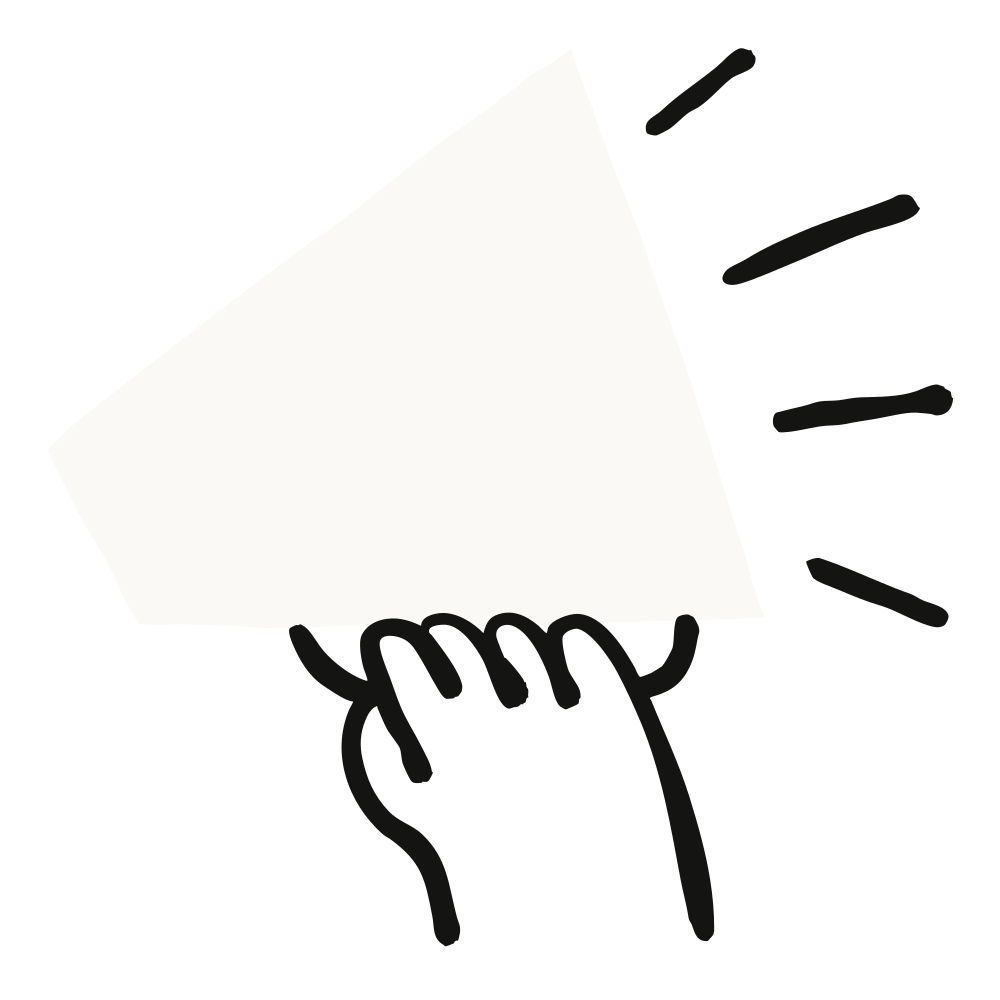

经济研究（Economic Research） 2026 年 4 月 22 日

经济研究团队正在推出 Anthropic 经济指数调查（Anthropic Economic Index Survey），这是一项通过 Anthropic Interviewer 进行的月度调查。理解 AI 的经济影响需要超越我们今天拥有的定量数据。使用和扩散指标告诉我们 AI 是如何被部署的，而传统的劳动力市场指标——如就业率、工资趋势和裁员——追踪已经发生的事情，而且往往有显著的延迟。两者都是必不可少的，但都无法捕捉人们如何体验 AI 带来的经济变化，也无法捕捉他们预期随着 AI 能力进步会发生什么。
虽然 AI 势将产生巨大影响，但关于 AI 将如何影响就业、生产力和失业（以及在什么时间线上）仍存在很大的不确定性。要预测一个仍在展开的转型，我们需要听取正在经历它的人们的意见，而且我们需要以能够在变化出现时就识别出它们的节奏来这样做。
在 Anthropic 经济指数调查中，我们的目标是捕捉一个丰富的新定性数据语料库。这项工作补充了一份配套报告，该报告以经济视角审视了 12 月通过 Anthropic Interviewer 收集的81,000 份开放式调查回复。我们将询问 Claude 用户：AI 是否正在改变他们今天的工作——他们可能正在移交哪些任务、是否看到生产力提升、在招聘和角色方面观察到什么变化——他们对未来的期望，以及他们希望一场处理得当的转型是什么样子。
每月收集这些数据，将使我们不仅能衡量人们经历和期望什么，还能衡量随着 AI 能力的发展，他们的看法转变得有多快。以保护隐私的方式与 Claude 使用数据相结合，这些第一手叙述可以在变化出现在劳动力市场总量数据中之前就浮出水面。
调查于今天启动。每个月，我们将邀请一小群随机选择的 Claude 用户：任何拥有至少两周历史的个人账户的人都可能被邀请。我们每个月都会轮换样本，以便随着时间推移听到尽可能广泛的人群的意见。如果你被邀请，你会在 claude.ai 上看到一个横幅，如果你主要在移动设备上使用 Claude，则会收到电子邮件。我们很希望你能参与。我们计划在未来的 Anthropic 经济指数报告和其他研究简报中发布洞见。更多信息请参见下面的常见问题解答。
我如何参与这项研究？ 从今天起，一小群随机抽样的、账户至少有两周历史的 Claude 用户将在 claude.ai、Cowork 桌面应用或（如果你只在移动设备上使用 Claude）电子邮件中看到邀请。我们每个月都会邀请一批新的 Claude 用户，所以如果你这次没有被选中，请留意。
这项研究会问我什么？ 我们将使用 Anthropic Interviewer 询问你关于你的工作、你在角色或组织中注意到的变化、你预期未来一年将如何变化，以及你希望一个由 AI 塑造的经济在十年后是什么样子。
你们将如何使用这些数据？ 我们将把这项研究的洞见作为我们经济研究的一部分进行分析、发布我们的发现，并以此改进我们的模型和服务，以反映我们所学到的东西。我们通过这项研究收集的数据将根据我们的补充隐私政策进行处理。我们也可能在已发布的发现中包含选择参与用户的去标识化回复。了解更多。
如果你有其他问题，请通过我们帮助中心右下角的消息图标联系我们。
Claude 的一个未发布的研究版本在与黎曼猜想相关的问题上取得了进展。它改进了黎曼 zeta 函数满足该猜想的零点比例的一个长期未破的下界，将其从 41.6% 提高到 67.2%。 了解更多
密码学算法。第一个攻击显著削弱了 HAWK——一种为未来量子计算机能够破解现有标准的世界而构建的数字签名方案。第二个攻击发现了一种攻击轮数缩减的 AES（使用最广泛的对称密码）的新方法。 了解更多
我们与 Andon Labs 合作，开发了一系列新的评估来测试 AI 模型使用飞行无人机的能力，最终形成了一个新的基准：Drone-Bench。 了解更多
Economic Research
Apr 22, 2026 The Economic Research team is launching the Anthropic Economic Index Survey, a monthly survey conducted through Anthropic Interviewer. Understanding AI's economic impact requires moving beyond the quantitative data we have today. Usage and diffusion metrics tell us how AI is being deployed, and traditional labor market indicators—like employment rates, wage trends, and layoffs—track what has already happened, often with meaningful delay. Both are essential, but neither captures how people experience the changes to the economy that AI brings, nor what they expect to happen as AI capabilities advance. While AI is poised to have large effects, there is substantial uncertainty about how AI will affect jobs, productivity, and unemployment (and on what timeline). To forecast a transition that is still unfolding, we need to hear from the people who are living through it, and we need to do so on a cadence that can identify changes as they emerge. In the Anthropic Economic Index Survey, we aim to capture a rich new corpus of qualitative data. This effort complements a companion report that takes an economic lens to the 81,000 open-ended survey responses collected through Anthropic Interviewer in December. We’ll ask Claude users about if AI is changing their work today—which tasks they may be handing off, if they’re seeing productivity gains, what shifts they may be observing in hiring and roles—their expectations for the future, and what they hope a well-handled transition looks like. Collecting these data monthly will enable measurement of not just what people experience and expect, but how quickly their views shift as AI capabilities evolve. Combined with Claude usage data in a privacy-preserving way, these first-hand accounts can surface change before it shows up in aggregate labor market data. The survey launches today. Each month, we will invite a small, randomly selected group of Claude users: anyone with a personal account at least two weeks old may be invited. We will rotate the sample each month so that we hear from as broad a range of people as possible over time. If you’re invited, you’ll see a banner on claude.ai, or get an email if you use Claude primarily on mobile. We’d love you to take part. We plan to publish insights in future Anthropic Economic Index reports and other research briefs. For more information, see the FAQ below.
How do I access the study? From today, a small random sample of Claude users with accounts at least two weeks old will see an invitation in claude.ai, the Cowork desktop app, or an email if you use Claude only on mobile. We invite a new set of Claude users each month, so if you’re not selected this time, keep an eye out. What will the study ask me? We will use Anthropic Interviewer to ask you about your work, what changes you’ve noticed in your role or organization, how you expect that to shift over the next year, and how you hope an economy shaped by AI will look in ten years. How will you use the data? We will analyze the insights from this study as part of our economic research, publish our findings, and use this to improve our models and services in ways that reflect what we’ve learned. The data we collect through this study will be processed according to our Supplemental Privacy Policy. We may also include de-identified responses in published findings, from users who opt in. Learn more. If you have further questions, reach out via the message icon in the lower right corner of ourHelp Center.
An unreleased research version of Claude has made strides on a problem related to the Riemann hypothesis. It improved a longstanding lower bound for the fraction of zeros of the Riemann zeta function that satisfy the hypothesis, increasing it from 41.6% to 67.2%. Read more
cryptographic algorithms. The first attack significantly weakens HAWK, a digital signature scheme that was built for a future world where quantum computers are able to break existing standards. The second identifies a new way to attack round-reduced AES, the most widely used symmetric cipher. Read more
Working with Andon Labs, we’ve developed a new series of evaluations that assess AI models’ ability to use a flying drone, culminating in a new benchmark: Drone-Bench. Read more